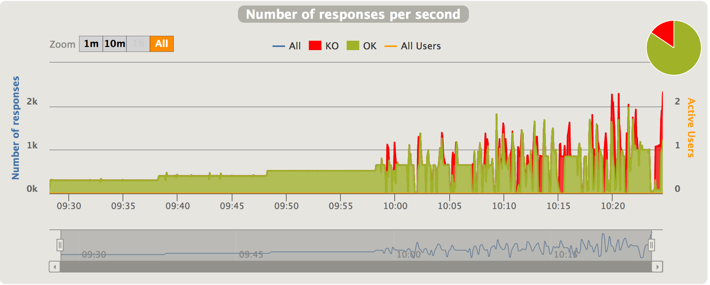

Overview¶
Global menu points to consolidated statistics.
Details menu points to per-request-type statistics.
Note
Reports can be generated from the simulation.log file even if the scenario was interrupted (Ctrl+C or process killed), use the -ro option.
See Configuration page.
Overall Simulation charts¶
Most of those charts are available for both the overall simulation report and for per request/group charts.
Indicators¶
This chart shows how response times are distributed among standard ranges. The right panel show number of OK/KO requests.
Note
these ranges can be configured in the gatling.conf file.
The top panel shows some standard statistics such as min, max, average, standard deviation and percentiles globally and per request.
Note
these percentiles can be configured in the gatling.conf file.
Note
If your scenario contains groups, this panel becomes a tree : each group is a non leaf node, and each request is a descendant leaf of a group. Group timings are by default the cumulated response times of all elements inside the group. Group duration can be displayed instead of group cumulated response time by editing the gatling.conf file.
The bottom panel shows some details on the failed requests.
Active users over time¶
This chart displays the active users during the simulation : total and per scenario.
Response time distribution¶
This chart displays the distribution of the response times.
Response time percentiles over time¶
This charts displays a variety of response time percentiles over time, but only for successful requests. As failed requests can end prematurely or be caused by timeouts, they would have a drastic effect on the percentiles computation.
Requests per second over time¶
This chart displays the number of requests sent per second over time.
Responses per second over time¶
This chart displays the number of responses received per second over time : total, successes and failures.